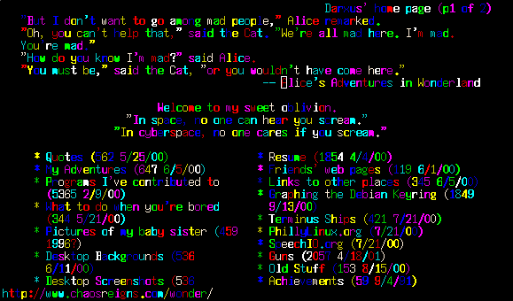

Obviously, the person who felt that Unix was not colorful enough had little experience with it.
If you were to use lynx to look at my home page from the command line through pclr (click here to download) (lynx http://www.chaosreigns.com | pclr), it might look like this:

I have tested pclr with many command line applications, and have not found problems with any. Of course, if you find any problems running any console application through pclr, let me know.
"Oh god." - Mom
"my god that's ugly :)" - mct@toren.net
"this rocks 8)" - time@clockbot.net
"I'm getting sick looking at bb through pclr" - mct@toren.net
<bj> i just did a bad, bad thing.
<laserhen> honey, that's awful!
<pinkee> nothing is going to top pclr
<pinkee> nothing
"BB through pclr is about as pleasant as a stones through a kidney" - laserhen
"That sounds more like vomit than rainbows" - Zeph
"thats so disgustingly good" - Duck_liberation_front, 2016-12-12
freshmeat.net has rejected my submission of pclr. This, as you may know, is the main forum through which to publicize the existence of a new open-source application. I encourage you to read their rejection notice, and complain.
I know the following applications can be colorized but I do not know how (please tell me)
Please email me suggestions for additions to this list, including what can be made more colorful, and how to make it more colorful.